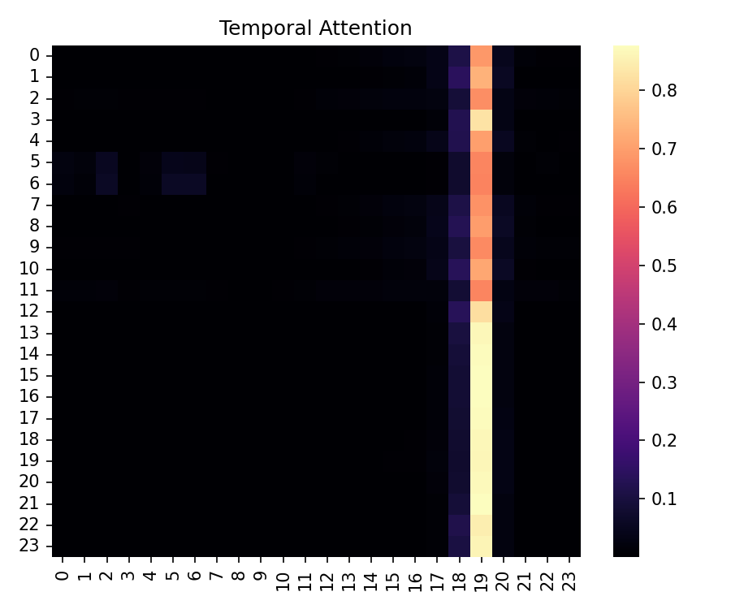
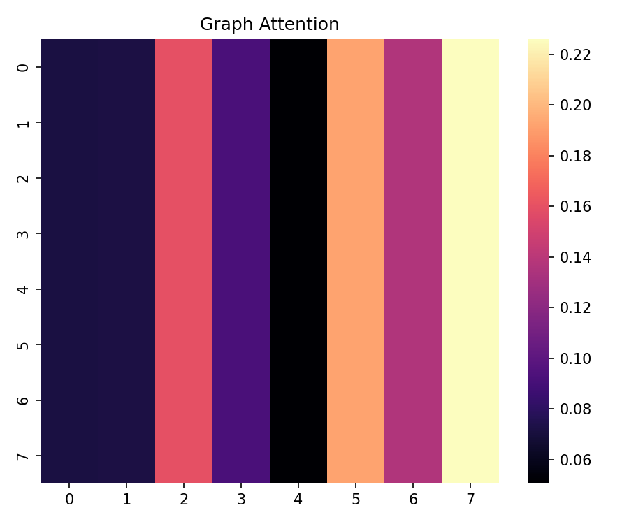
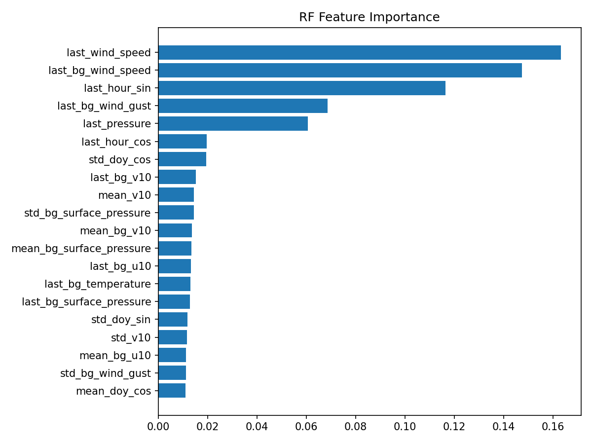

核心能力
中国西北站点风险图
低风险
中风险
高风险
极高风险
单站点预测展示
前端演示模式基于真实结果快照推演，用于成果展示与交互演示。
历史事件回放
当前时刻：-
模型结果展示
-
主模型预警识别能力
-
二分类排序能力
-
不平衡事件识别能力
主模型 vs Baseline
事件级评估摘要
结论：主模型在事件识别与概率输出上具备稳定优势。
可解释性展示
时间级解释

重点窗口通常集中在事件前 3–8 小时。
空间级解释

上游站点与通道站对下游风险有显著贡献。
变量级解释

风速、湿度、沙源接近度是主要驱动因子。
数据与模型架构
理论机制层
源区条件 → 起沙条件 → 输送条件 → 落区影响
数据层
站点时序 + 背景场 + 静态地理因子 + 遥感扩展位
模型层
时间编码 + 空间图编码 + 多任务输出
业务层
风速 / 风险等级 / 预警概率 / 可解释性 / 决策支持
项目必要性与限定条件
- 区域限定：聚焦中国西北重点沙源区与下游走廊
- 时效限定：0–6 小时短临增强预测
- 数据限定：多源数据条件下优势更显著
- 工程限定：轻量、可解释、可部署
- 决策定位：最后一公里辅助决策增强
- 不替代国家/省级业务预报
- 适合答辩展示、项目申报、客户演示
- 支持官网展示 + 在线体验分流模式